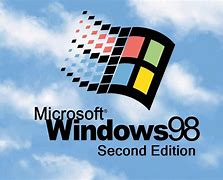
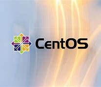

Versões do Windows
windows 1
O Windows 1.0 foi o primeiro sistema operacional gráfico desenvolvido pela Microsoft, lançado em novembro de 1985. Ele não foi um sistema independente, mas sim uma interface gráfica que rodava sobre o MS-DOS, o sistema operacional de linha de comando dominante na época. O Windows 1.0 marcou o início da transição dos sistemas operacionais baseados em texto para ambientes gráficos. Aqui estão os principais pontos sobre o Windows 1.0: Interface Gráfica: Ele introduziu janelas sobrepostas, o que era uma novidade na época, apesar de as janelas não poderem ser minimizadas ou sobrepostas uma à outra — elas tinham que ser dispostas lado a lado na tela. Programas e Funcionalidades: O Windows 1.0 oferecia programas simples como o Paint, Calculator, Notepad, e um gerenciador de arquivos, além de suporte para multitarefa básica, onde era possível alternar entre programas, mas não executá-los simultaneamente. Inovações e Limitações: Embora tenha sido um passo importante na evolução dos sistemas operacionais gráficos, o Windows 1.0 foi criticado por ser instável e limitado em funcionalidade. Muitos usuários na época preferiam continuar usando o MS-DOS diretamente, já que o Windows 1.0 ainda dependia fortemente dele para realizar tarefas complexas. Aceitação no Mercado: O lançamento do Windows 1.0 não foi um grande sucesso comercial. Muitos usuários não viram muita vantagem em abandonar o MS-DOS por uma interface gráfica tão limitada. No entanto, ele plantou as sementes para versões posteriores do windows, que iriam se tornar muito mais populares e refinadas. O Windows 1.0, embora um pouco limitado e experimental, abriu o caminho para a evolução dos sistemas operacionais da Microsoft, levando eventualmente ao sucesso estrondoso do Windows 95 e suas versões subsequentes.
windows 2

Aceitação Comercial: Apesar das melhorias, o Windows 2.0 ainda não teve grande sucesso comercial. A maioria dos usuários continuou usando o MS-DOS diretamente, mas o sistema começou a atrair mais desenvolvedores e a criar uma base de usuários que confiava na interface gráfica para tarefas cotidianas. Importância para o Futuro: O Windows 2.0 estabeleceu as bases para versões subsequentes, como o Windows 3.0, que finalmente seria um grande sucesso. Ele também foi crucial para a Microsoft, pois ajudou a consolidar sua presença no mercado de sistemas operacionais gráficos. Em resumo, o Windows 2.0 foi um avanço importante, embora ainda longe de ser o sistema perfeito. Ele trouxe melhorias essenciais em termos de usabilidade e desempenho, preparando o terreno para as versões que se seguiram.
windows 3
O Windows 3.0, lançado em maio de 1990, foi a primeira versão do sistema operacional gráfico da Microsoft a alcançar grande sucesso comercial, consolidando a Microsoft como líder no mercado de sistemas operacionais para PCs. Aqui estão os principais pontos sobre o Windows 3.0: Interface Gráfica Refinada: O Windows 3.0 trouxe uma interface mais moderna e atraente, com ícones mais detalhados, janelas sobreponíveis, e uma barra de tarefas aprimorada. A experiência de usuário foi significativamente melhorada em comparação com as versões anteriores. Multitarefa: A multitarefa foi mais eficiente, permitindo que os aplicativos fossem executados simultaneamente, e a alternância entre eles ficou muito mais fluida. Isso foi possível graças ao gerenciamento de memória melhorado e ao suporte para multitarefa preemptiva (ao invés de cooperativa, como no Windows 2.0). Sucesso Comercial: O Windows 3.0 foi um grande sucesso comercial, vendendo milhões de cópias em seus primeiros anos e estabelecendo a Microsoft como a principal fornecedora de sistemas operacionais gráficos. Ele também preparou o terreno para o Windows 3.1, que viria a ser ainda mais popular. Em resumo, o Windows 3.0 foi um marco importante, tanto em termos de design quanto de funcionalidade. Ele não apenas consolidou o Windows como um sistema gráfico viável, mas também foi a base para as versões futuras que viriam a dominar o mercado de PCs.
windows 4
O Windows 4.0, na verdade, não existe como um nome oficial, mas o que você está se referindo é provavelmente o Windows 95, que foi lançado em agosto de 1995 e representou uma verdadeira revolução no mundo dos sistemas operacionais da Microsoft. O Windows 95 não seguiu a numeração simples (como 3.x ou 4.0), mas muitos o consideram como a "versão 4" em termos de evolução, dado seu salto significativo em relação ao Windows 3.1. Sucesso Comercial: O Windows 95 foi um dos maiores sucessos da Microsoft, vendendo milhões de cópias logo após o lançamento. A campanha de marketing foi massiva, com comerciais de TV, lançamento com grande alarde e uma das primeiras estreias de software em massa. Em resumo, o Windows 95 foi um marco importante na história do sistema operacional, não apenas por suas melhorias técnicas, mas também pela maneira como mudou a forma como interagimos com os computadores. Ele foi a versão que realmente consolidou o Windows como o sistema operacional predominante em PCs e abriu o caminho para os sistemas operacionais modernos.
windows 98
O Windows 98, lançado pela Microsoft em junho de 1998, foi uma evolução direta do Windows 95, mantendo a base do sistema e introduzindo uma série de melhorias, com ênfase em desempenho, compatibilidade e novos recursos, visando atender melhor tanto aos usuários domésticos quanto às necessidades de conectividade e rede. O Windows 98 foi um avanço importante em relação ao Windows 95, trazendo melhorias significativas no desempenho, suporte a hardware, conectividade com a internet e funcionalidades multimídia. A versão teve um grande impacto na popularização do PC para uso doméstico e pequenas empresas, embora ainda sofresse de alguns problemas de estabilidade e compatibilidade. O lançamento da Second Edition (SE) em 1999 ajudou a corrigir muitos desses problemas e consolidou o Windows 98 como um dos sistemas operacionais mais utilizados na virada do milênio.
windows 5
O Windows 5.0 é, na verdade, a versão Windows 2000, lançada pela Microsoft em fevereiro de 2000. Apesar de a Microsoft não ter usado o nome "Windows 5.0" publicamente, ele corresponde a essa versão, que foi um marco importante na linha de sistemas operacionais da empresa. O Windows 2000 teve um grande foco em estabilidade, segurança e suporte a ambientes empresariais, e foi uma ponte crucial entre o Windows 98 (para usuários domésticos) e o Windows XP. Em resumo, o Windows 2000 foi uma versão crucial, com foco em estabilidade, segurança e desempenho para ambientes corporativos, representando uma transição importante entre o Windows 98/ME (mais voltado para o consumidor doméstico) e o futuro Windows XP. Ele pavimentou o caminho para a revolução que viria com o XP, mas se destacou por suas melhorias técnicas e seu impacto no uso de computadores em grandes empresas.
windows xp
O Windows XP, lançado pela Microsoft em 25 de outubro de 2001, foi um marco na evolução dos sistemas operacionais da empresa. Ele foi uma das versões mais bem-sucedidas e duradouras do Windows, ganhando ampla popularidade tanto entre usuários domésticos quanto em ambientes corporativos. O Windows XP foi um dos sistemas operacionais mais populares e duradouros da história da Microsoft, oferecendo uma interface intuitiva, desempenho robusto e compatibilidade com uma grande variedade de hardware e software. Foi amplamente adotado por usuários domésticos e empresas devido à sua estabilidade e facilidade de uso. Sua longevidade e sucesso também podem ser atribuídos à capacidade da Microsoft de fornecer atualizações e melhorias ao longo de sua vida útil. O Windows XP é lembrado com carinho por muitos usuários que o consideram um dos melhores sistemas operacionais da Microsoft.
windows 6
O Windows 6.0 corresponde ao Windows Vista, lançado pela Microsoft em janeiro de 2007. O Vista foi uma tentativa de modernizar a plataforma Windows, trazendo novas funcionalidades, segurança aprimorada e uma interface gráfica completamente renovada. No entanto, ele enfrentou vários desafios, como problemas de compatibilidade e desempenho, o que afetou sua aceitação no mercado. A segurança foi uma das áreas em que o Windows Vista se destacou. Uma das principais adições foi o Controle de Conta de Usuário (UAC), que pedia confirmação sempre que uma ação que exigisse privilégios administrativos fosse realizada. Isso aumentava a proteção contra malwares e alterações não autorizadas no sistema. Embora o UAC tenha sido criticado por ser excessivamente intrusivo, ele foi uma tentativa importante de melhorar a segurança do sistema. Embora o Windows Vista tivesse várias inovações, ele enfrentou problemas sérios de desempenho, especialmente em computadores mais antigos e em máquinas com hardware mais modesto. Além disso, o sistema foi criticado pela exigência de recursos de hardware (como memória e poder de processamento), o que resultava em uma experiência de uso lenta para muitos usuários. Muitos preferiram continuar com o Windows XP, que era mais rápido e estável em comparação. O Windows Vista foi uma versão ambiciosa do sistema operacional da Microsoft, trazendo uma nova interface, segurança aprimorada e recursos inovadores. No entanto, problemas de desempenho, compatibilidade de software e hardware dificultaram sua aceitação. Ele serviu como um passo intermediário entre o Windows XP e o Windows 7, que corrigiu muitas das falhas do Vista e foi muito mais bem-sucedido.
windows 7

O Windows 7 foi lançado pela Microsoft em outubro de 2009 e é amplamente considerado uma das versões mais bem-sucedidas e populares do sistema operacional Windows. Ele foi projetado para corrigir muitos dos problemas do Windows Vista, enquanto aprimorava a experiência do usuário com melhorias significativas em desempenho, estabilidade, e usabilidade.
windows 8
O Windows 8 foi uma tentativa ousada da Microsoft de criar uma plataforma unificada para PCs, tablets e smartphones, com foco em telas sensíveis ao toque e a introdução de uma nova interface Metro. A mudança radical causou confusão entre os usuários tradicionais de desktop, que sentiram falta do Menu Iniciar e tiveram dificuldades para navegar entre o modo desktop e a tela inicial. Embora o Windows 8 tenha trazido melhorias em desempenho e segurança, ele não foi amplamente aceito, o que levou ao lançamento do Windows 8.1 para corrigir algumas falhas. O sistema foi substituído pelo Windows 10 em 2015, que buscou recuperar o equilíbrio entre os usuários de desktop e os usuários de dispositivos móveis.
windows 9
O Windows 9 nunca foi lançado pela Microsoft. Após o Windows 8.1, a Microsoft deu um salto direto para o Windows 10, pulando o número 9 na sequência. Embora a Microsoft nunca tenha oficialmente explicado o motivo de pular o Windows 9, há algumas teorias e razões por trás dessa decisão. O Windows 9 nunca foi lançado porque a Microsoft decidiu pular o número 9, avançando diretamente para o Windows 10, como parte de uma estratégia para se distanciar das críticas ao Windows 8, evitar conflitos de compatibilidade de código e renovar a imagem do sistema operacional. O Windows 10 trouxe uma experiência mais equilibrada entre dispositivos móveis e desktops, visando ser a "última versão" do Windows, que seria continuamente atualizada ao longo do tempo.
windows 10
O Windows 10, lançado em 29 de julho de 2015, foi um marco importante para a Microsoft, representando um grande salto evolutivo em relação ao Windows 8 e à sua tentativa de unificar a experiência de usuário em diferentes tipos de dispositivos, como desktops, laptops, tablets e smartphones. O Windows 10 foi concebido como o “último Windows” no sentido de que, ao invés de lançar novas versões inteiramente novas a cada alguns anos, ele seria atualizado continuamente. A Microsoft adotou o conceito de um sistema operacional como serviço, com atualizações constantes e melhorias regulares, evitando o ciclo de versões como no passado.
windows 11
O Windows 11 foi lançado oficialmente em 5 de outubro de 2021 como a nova versão do sistema operacional da Microsoft, sucedendo o Windows 10. Ele trouxe uma série de mudanças de design, melhorias de desempenho e novas funcionalidades, com o objetivo de oferecer uma experiência mais moderna, centrada no usuário e otimizada para trabalho híbrido (combinando o trabalho remoto e no escritório). A transição do Windows 10 para o Windows 11 foi vista como uma evolução, mas com uma abordagem mais simplificada e estética. Versões do Windows 11 O Windows 11 foi lançado em várias edições, assim como o Windows 10: Windows 11 Home: Versão básica, direcionada para usuários domésticos. Windows 11 Pro: Inclui recursos adicionais, como segurança avançada, gerenciamento de dispositivos e conectividade com redes empresariais. Windows 11 Enterprise: Focada em grandes empresas, com mais opções de segurança e gerenciamento. Windows 11 Education: Versão voltada para instituições educacionais. Windows 11 Pro for Workstations: Para usuários avançados e profissionais que precisam de alto desempenho. Resumo O Windows 11 é uma versão mais moderna e refinada do sistema operacional da Microsoft, com foco em produtividade, design e segurança. Ele trouxe um novo visual, melhorias de multitarefa com o Snap Layouts, integração com o Microsoft Teams, e suporte a jogos mais robusto, além de suporte a aplicativos Android e melhorias significativas em desempenho e segurança. No entanto, os requisitos de hardware mais elevados podem limitar a compatibilidade com alguns dispositivos antigos, o que gerou controvérsias. O Windows 11 busca ser um sistema mais adaptado para o futuro do trabalho híbrido, proporcionando uma experiência unificada e integrada para usuários de diferentes dispositivos.
Distribuição do Linux

Ubuntu
O Ubuntu é uma das distribuições Linux mais populares e amplamente utilizadas, tanto por iniciantes quanto por usuários mais experientes. É baseada no Debian e foi criada com o objetivo de oferecer uma experiência de uso simples, acessível e amigável, sem perder as potências e recursos que o Linux tem a oferecer.O Ubuntu é conhecido pela sua facilidade de uso, o que o torna uma escolha popular entre novos usuários do Linux. Sua instalação é simples e o sistema oferece uma interface gráfica intuitiva, permitindo que até mesmo quem nunca usou Linux antes consiga usar sem muitos problemas. O Ubuntu usa o ambiente de desktop GNOME como padrão, com algumas modificações próprias. GNOME é moderno, limpo e simples, e o Ubuntu ajustou o design para criar uma experiência mais coesa e fácil de usar. Vantagens do Ubuntu: Fácil de usar: Ideal para iniciantes. Grande comunidade: Facilita encontrar suporte e soluções online. Atualizações frequentes: Oferece a mais recente versão de software e suporte contínuo. Ampla compatibilidade de hardware: Funciona bem na maioria das máquinas, incluindo laptops, desktops e até servidores. Gratuito e open source: O Ubuntu é totalmente gratuito e de código aberto, o que permite modificações no código para quem precisar. Desvantagens do Ubuntu: Consumo de recursos: Como o Ubuntu usa o GNOME, pode consumir mais recursos comparado a distros mais leves, como o Debian ou Xubuntu, especialmente em máquinas mais antigas. Mudanças frequentes: A interface gráfica e os fluxos de trabalho do Ubuntu podem mudar entre as versões, o que pode incomodar quem prefere uma experiência mais estável. Software proprietário: Embora a maior parte do software seja livre e de código aberto, algumas vezes o Ubuntu inclui softwares proprietários ou dá sugestões para sua instalação, como drivers de vídeo ou codecs multimídia. O Ubuntu é uma das distribuições Linux mais amigáveis, oferecendo uma experiência fácil e funcional para iniciantes, mas também poderosa o suficiente para usuários mais avançados. Se você está migrando de outro sistema operacional ou procurando uma solução Linux confiável para o seu dia a dia, o Ubuntu é uma excelente escolha.
Linux Mint
Linux Mint é uma das distribuições Linux mais populares e amplamente adotadas, especialmente para quem está migrando do Windows ou buscando uma experiência mais amigável e simples. Baseado no Ubuntu (e por sua vez no Debian), o Mint traz muitas das vantagens e robustez do Ubuntu, mas com algumas melhorias que focam na experiência do usuário.O Linux Mint é conhecido por sua facilidade de uso, tornando-o uma das melhores opções para iniciantes no mundo Linux. Ele oferece uma interface intuitiva, com recursos familiares para quem já usou sistemas como o Windows. A instalação também é muito simples, com um assistente gráfico claro e fácil de seguir. Vantagens do Linux Mint: Facilidade de uso: É muito fácil de instalar e configurar, ideal para iniciantes no Linux. Interface amigável e familiar: O Mint usa uma interface gráfica tradicional que lembra o Windows, facilitando a adaptação. Desempenho sólido: Oferece um bom desempenho mesmo em máquinas mais antigas. Personalização: O ambiente Cinnamon oferece muitas opções de personalização, permitindo ajustar o sistema ao seu gosto. Estabilidade: Como é baseado no Ubuntu LTS, o Mint é muito estável, o que é ótimo para quem busca uma solução de longo prazo. Ferramentas extras: O Mint vem com ferramentas como Timeshift e Mint Update, que tornam a experiência de usar o sistema mais prática. Desvantagens do Linux Mint: Falta de inovações rápidas: Por ser mais focado na estabilidade e simplicidade, o Mint tende a ser mais conservador nas atualizações de recursos. Quem busca sempre a última versão de software pode preferir distribuições como Fedora ou Arch Linux. Consumo de recursos do Cinnamon: Embora o Cinnamon seja relativamente leve, ele pode consumir mais recursos do que outros ambientes gráficos como XFCE ou MATE. ParaFedora
Fedora é uma distribuição Linux de vanguarda, conhecida por ser inovadora e frequentemente usada como plataforma de testes para novos recursos antes que eles sejam implementados em distribuições mais estáveis como o Red Hat Enterprise Linux (RHEL). É mantida pela Fedora Project, que tem como objetivo oferecer um sistema de código aberto de ponta, com uma forte ênfase em software livre, inovação e segurança. Vantagens do Fedora: Inovação constante: Ideal para quem deseja estar sempre na vanguarda da tecnologia. Segurança robusta: Com ferramentas como SELinux e criptografia de disco. Experiência moderna: Usando o ambiente de desktop GNOME, que oferece uma interface clean e eficiente. Foco em desenvolvedores: Muitas ferramentas e recursos voltados para quem trabalha com desenvolvimento, containers e nuvem. Suporte a Flatpak: Permite que os aplicativos sejam instalados de forma segura e isolada do sistema. Desvantagens do Fedora: Mudanças frequentes: O ciclo de lançamento rápido pode ser um problema para aqueles que preferem uma distribuição com menos atualizações e mudanças constantes. Menos "pronto para uso": Embora o Fedora seja excelente para desenvolvedores, ele pode exigir um pouco mais de configuração inicial em comparação com distribuições como Ubuntu ou Linux Mint, que vêm com mais software pré-instalado e configurado. Suporte limitado a software proprietário: O Fedora tem uma política de "somente software livre", o que significa que não inclui drivers proprietários ou codecs de áudio e vídeo por padrão, embora seja possível adicioná-los manualmente.
Manjaro
Manjaro é uma das distribuições Linux mais populares, baseada no Arch Linux, mas projetada para ser mais fácil de usar e acessível para iniciantes e usuários intermediários. Ele oferece todos os benefícios de uma distribuição rolling release (atualizações contínuas), mas com uma instalação e configuração simplificadas. Se você está procurando um sistema poderoso, flexível e com uma abordagem mais amigável do que o Arch Linux puro, o Manjaro é uma excelente escolha. Vantagens do Manjaro: Baseado no Arch Linux: Oferece todos os benefícios do Arch, como um sistema leve, rápido e altamente personalizável. Instalação fácil e configurada: Ao contrário do Arch, o Manjaro é fácil de instalar e configurar, com um instalador gráfico intuitivo e ferramentas de configuração fáceis de usar. Rolling release com estabilidade: O Manjaro mantém o modelo rolling release do Arch, mas com pacotes mais testados para maior estabilidade. Diversidade de ambientes de desktop: Oferece várias opções de ambientes gráficos (Xfce, KDE, GNOME) para se adaptar ao seu estilo de trabalho e preferências. Acesso ao AUR: Acesso fácil ao repositório AUR, que contém milhares de pacotes adicionais não disponíveis em outras distribuições. Fácil gerenciamento de drivers: Ferramentas simples para instalar drivers gráficos e outros drivers proprietários. Desempenho e leveza: Manjaro é rápido e relativamente leve, especialmente nas edições com Xfce. Desvantagens do Manjaro: Rolling release pode ser arriscado: Apesar do Manjaro testar pacotes antes de lançá-los, o modelo rolling release ainda pode apresentar instabilidade ocasional, especialmente para usuários menos experientes. Menos “out-of-the-box” do que algumas distribuições: Comparado com o Ubuntu ou Linux Mint, o Manjaro pode exigir mais configuração inicial e personalização. Comunitário: Embora tenha uma boa comunidade, o Manjaro pode não ter o mesmo nível de suporte comercial ou a mesma documentação oficial extensa que outras distribuições mais populares.
Elementary OS
elementary OS é uma distribuição Linux que foca em uma experiência de usuário simples, intuitiva e elegante, inspirada no design do macOS. A principal missão do elementary OS é criar um sistema operacional acessível, funcional e visualmente atraente, sem sobrecarregar o usuário com complexidade. A distribuição é baseada no Ubuntu, o que garante uma base estável e um vasto repositório de software, mas com uma abordagem única em termos de interface e filosofia de design. Vantagens do elementary OS: Design minimalista e bonito: Uma das distribuições mais elegantes, com foco em uma experiência do usuário agradável e sem distrações. Fácil de usar: Ideal para iniciantes no Linux ou para quem vem de outros sistemas operacionais (como Windows ou macOS). AppCenter com aplicativos bem integrados: Oferece uma seleção curada de aplicativos de alta qualidade e também permite que desenvolvedores vendam seus aplicativos diretamente. Leveza e desempenho: Sistema otimizado para rodar bem em computadores mais antigos e também em hardware moderno. Privacidade e segurança: Foco em garantir que os usuários tenham controle sobre seus dados e sua privacidade. Base Ubuntu LTS: Como o elementary OS é baseado no Ubuntu LTS, ele tem acesso a uma grande comunidade e suporte, além de ser muito estável. Desvantagens do elementary OS: Menos flexível que outras distribuições: O foco na simplicidade pode limitar as opções de personalização em comparação com outras distribuições mais avançadas como o Arch ou o Manjaro. Menos software disponível no AppCenter: Embora o AppCenter tenha muitos aplicativos úteis, ele não tem a mesma variedade de software disponível em repositórios como o Ubuntu Software Center ou o AUR. Falta de suporte nativo a algumas opções avançadas: Usuários que buscam uma experiência altamente configurável ou que desejam recursos mais avançados de personalização podem achar o elementary OS limitado. Software pago na loja: O modelo de distribuição de aplicativos pagos pode não agradar todos os usuários, especialmente aqueles que preferem o acesso totalmente gratuito a todos os aplicativos.
Kali Linux
Kali Linux é uma distribuição Linux baseada no Debian, voltada principalmente para testes de segurança, análise forense e hacking ético. Originalmente chamada de BackTrack, a distribuição foi renomeada para Kali em 2013 e é uma das distribuições mais conhecidas e amplamente utilizadas por profissionais de segurança cibernética, pentesters (testadores de penetração) e hackers éticos. Kali Linux vem com uma grande quantidade de ferramentas pré-instaladas para realizar testes de penetração, análise de redes e exploração de vulnerabilidades.
CentOS
CentOS (sigla para Community ENTerprise Operating System) é uma distribuição Linux de código aberto e gratuita, baseada nos fontes do Red Hat Enterprise Linux (RHEL). Ela foi projetada para fornecer a funcionalidade e estabilidade de um sistema empresarial, mas sem os custos de licenciamento associados ao RHEL. Com a transição do CentOS para o CentOS Stream, a mudança não agradou a todos, especialmente os usuários que precisavam de uma versão estável de longa duração. Portanto, muitas empresas estão migrando para alternativas como Rocky Linux e AlmaLinux, que visam manter a estabilidade e compatibilidade com o RHEL.
Zorin OS
O Zorin OS é uma distribuição Linux baseada no Ubuntu, projetada para ser fácil de usar, especialmente para quem está migrando de sistemas operacionais como o Windows. Ele oferece uma interface amigável e visualmente similar ao Windows, o que torna a transição para o Linux mais suave para usuários iniciantes ou que já estão acostumados com o Windows. Características principais do Zorin OS: Interface Gráfica Amigável: O Zorin OS tem um design clean e moderno, com a possibilidade de personalizar a aparência para se assemelhar mais ao Windows ou ao macOS. Ele oferece várias opções de layout de desktop, permitindo que o usuário escolha a interface que mais se adapta ao seu estilo. Baseado no Ubuntu: Como é baseado no Ubuntu, o Zorin OS herda a robustez e a estabilidade do Ubuntu, além de ter acesso a todos os repositórios de software do Ubuntu. Isso significa que você pode instalar a maioria dos programas e pacotes compatíveis com o Ubuntu no Zorin. Compatibilidade com Software Windows: O Zorin OS facilita a instalação de aplicativos do Windows usando o Wine (uma camada de compatibilidade) e o PlayOnLinux, além de oferecer o Zorin OS App que permite acessar uma grande variedade de programas populares.
Puppy Linux
O Puppy Linux é uma distribuição Linux leve e rápida, projetada para ser altamente eficiente em sistemas com poucos recursos de hardware, como computadores mais antigos ou com pouca memória RAM. Ele é conhecido pela sua simplicidade, desempenho e facilidade de uso. O Puppy Linux é ideal para quem precisa de um sistema rápido e eficiente, especialmente em hardware mais antigo. Ele é perfeito para uso diário em máquinas com recursos limitados, além de ser uma excelente opção para reviver computadores antigos sem comprometer o desempenho. Se você está procurando um sistema Linux leve, fácil de usar e portátil, o Puppy Linux pode ser uma excelente escolha.
Tails
O Tails (The Amnesic Incognito Live System) é uma distribuição Linux focada em privacidade e anonimato. Ele é projetado para ser usado de forma temporária e não deixa vestígios no computador após o desligamento. Aqui estão alguns pontos chave sobre o Tails. O Tails é ideal para quem precisa de um sistema operacional temporário e altamente seguro, onde a privacidade e o anonimato são prioridades. Ele é frequentemente utilizado por pessoas que vivem sob regimes repressivos ou em situações em que a vigilância e a censura são preocupações sérias.
Pop!_OS
O Pop!_OS é uma distribuição Linux de código aberto desenvolvida pela System76, focada em proporcionar uma experiência eficiente e amigável, voltada para desenvolvedores, gamers e profissionais em geral. Ele é baseado no Ubuntu, o que significa que herda muitas das vantagens de estabilidade e gerenciamento de pacotes dessa distribuição. Aqui estão alguns dos principais recursos do Pop!_OS: